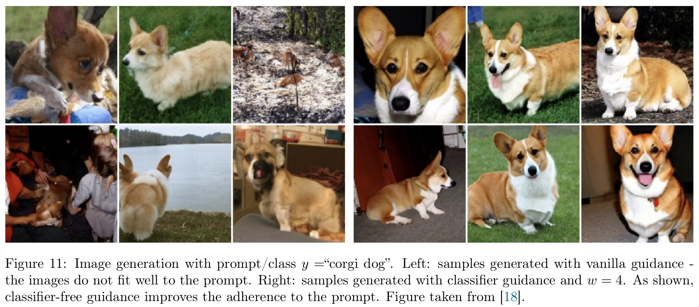
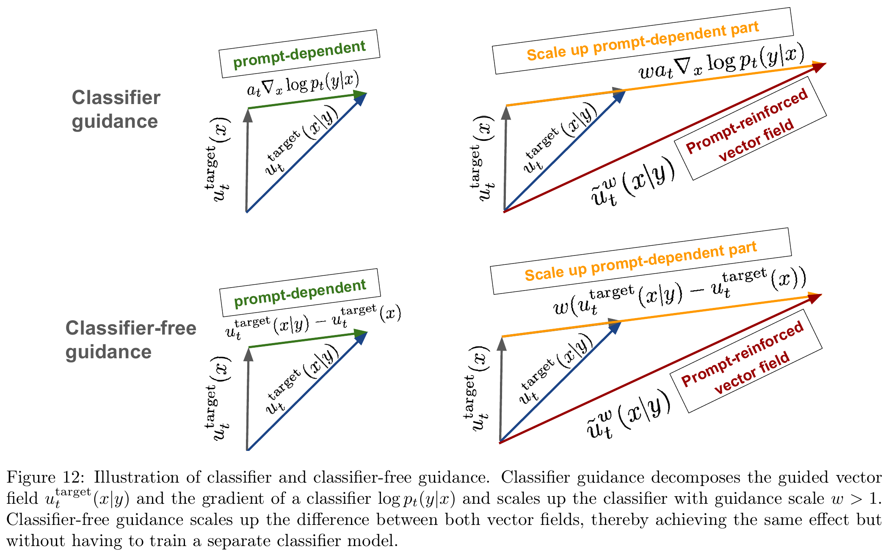
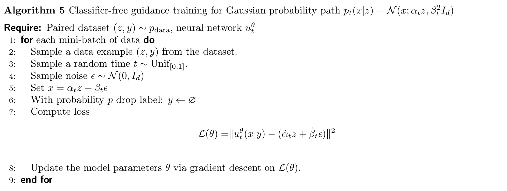
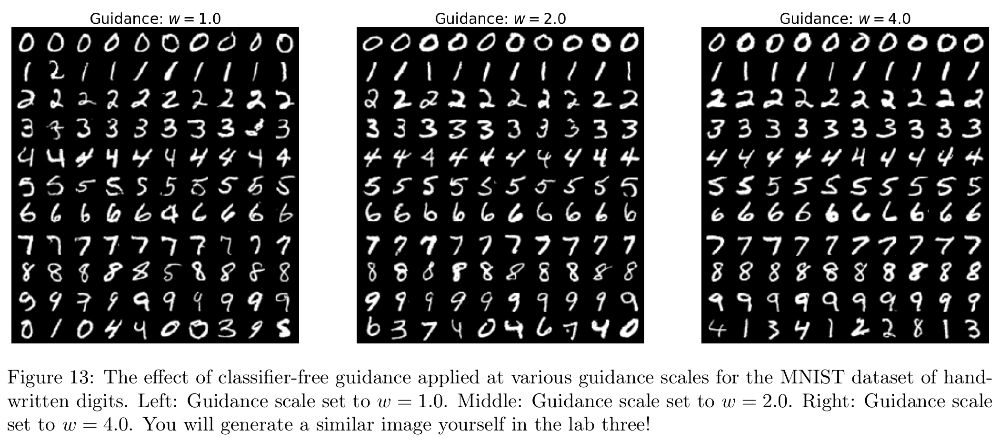
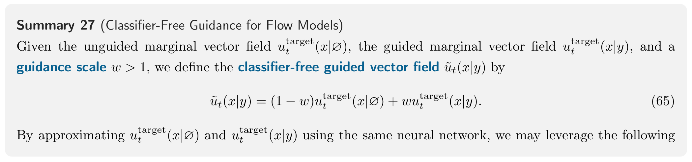
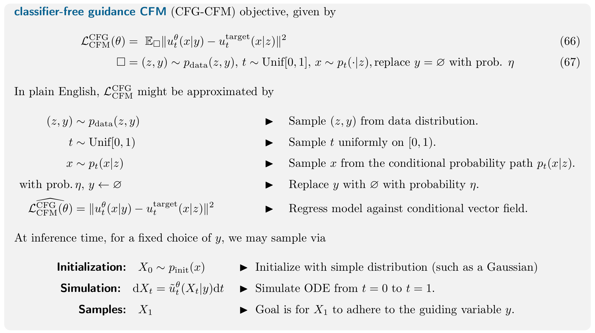

第 5 章 · 生成模型
Guidance: How to Condition on a Prompt
前几章讨论了怎样从简单噪声生成数据。现在还希望生成结果符合指定的类别或文字描述：输入“柯基犬”时生成柯基犬，输入“海边日落”时生成相应的画面。
数学上的变化是：原来希望从整体数据分布 pdata(z) 采样，现在希望从给定提示词后的数据分布 pdata(z∣y) 采样。这里 y 可以是类别标签，也可以是文字提示词。
本章有两步：先让网络接收提示词，学会按条件生成；再在采样时加强提示词带来的影响，这就是 Classifier-Free Guidance（CFG）的作用。CFG 可以用于 Flow Model，也可以用于 Diffusion Model。
先认清 z 与 y：训练样本和生成条件
| 符号 | 表示什么 | 训练时 | 生成时 |
|---|---|---|---|
| z | 干净数据样本 | 已知，取自训练集 | 没有预设的 z |
| y | 类别或文字提示 | 已知，与 z 配对 | 已知，由用户指定 |
| xt | 时刻 t 的状态 | 由 z 和噪声构造 | 从噪声逐步更新 |
训练时，z 是已知的。我们从数据集中读取一对 (z,y)，用 z 构造带噪状态 xt 和速度监督；网络接收 xt,y,t。生成时则只有用户给出的 y 和不断更新的 xt，没有一张预先指定、等待复原的目标图片。即使提示词同为“柯基犬”，也可以生成不同的柯基犬。
pt(x∣z) 描述固定一张干净图片 z 后，时刻 t 的状态怎样分布；pt(x∣y) 描述固定提示词 y 后，所有符合它的图片在这一时刻共同形成的分布。由于一个提示词通常对应许多张图片，后一种分布要把前一种分布混合起来。若构造路径时不再额外使用 y，由全概率公式得到：
pt(x∣y)=∫pt(x∣z)pdata(z∣y)dz.
例如，“柯基犬”对应许多不同的图片 z。每张图片都有自己的 pt(x∣z)；式中的 pdata(z∣y) 给出这些图片在该条件下的权重。对 z 积分，就是按权重合并它们在时刻 t 的分布，得到 pt(x∣y)。这是对目标概率路径的描述；生成单个样本时不必遍历训练图片。
术语约定（Remark 25）：前几章的 conditional 多指固定干净样本 z 后的路径；本章用 guided 强调生成还要服从提示词 y。下面先讨论怎样训练普通的条件生成模型，再讨论怎样加强提示词的作用。
5.1 Vanilla Guidance：把提示词交给网络
给速度网络增加提示词输入
对 Flow Model，原来的速度网络输入是 (x,t)，现在变成：
uθ:Rd×Y×[0,1]⟶Rd,(x,y,t)⟼utθ(x∣y).
Y 表示提示词所在的空间。网络仍然输出一个与 x 同维的速度向量，但现在会根据 y 决定怎样移动。提示词怎样编码成网络能接收的向量，是下一章的内容；这里先把它当作已提供的输入。
如果生成过程还加入预先指定强度的随机噪声，就得到条件 Diffusion Model 的 SDE：dXt=utθ(Xt∣y)dt+σtdWt。σt 可以随时间变化；当它恒为零时，就退化为下面先讨论的 Flow Model。CFG 的 SDE 用法放在文末说明。
固定提示词后，生成过程就是：
初始化：演化：希望达到的目标：X0∼pinit,dtdXt=utθ(Xt∣y),X1∼pdata(⋅∣y).
终点能否接近目标分布，取决于学到的速度和数值求解的精度；同一个 y 下，不同的初始噪声也会生成不同样本。
训练目标：在 Flow Matching 中加入配对条件
训练仍沿用 Flow Matching：用已知样本 z 与噪声构造 xt 和目标速度，以平方误差训练网络。现在数据是配对的 (z,y)，网络还要接收 y；固定 y,t 后，损失写成：
Ez∼pdata(⋅∣y),x∼pt(⋅∣z)[utθ(x∣y)−uttarget(x∣z)2].(57)
式（57）是固定 y 后分析训练目标的写法；它不要求先把具有相同提示词的图片分成一组。实际训练直接读取数据集里的配对 (z,y)，并对不同提示词与时刻一起求平均：
LCFMguided(θ)=E(z,y)∼pdata(z,y),t∼Unif[0,1]x∼pt(⋅∣z)[utθ(x∣y)−uttarget(x∣z)2].(58)
为把式（58）写成可直接计算的量，沿用高斯路径，取与 (z,y) 独立的噪声 ϵ。中间状态和它的速度为：
xt=αtz+βtϵ,ϵ∼N(0,Id),rt=α˙tz+β˙tϵ.
若取 α0=β1=0, α1=β0=1，则 x0=ϵ∼N(0,Id)、x1=z。因此这里的高斯例子对应 pinit=N(0,Id)；换用其他初始分布时，路径的起点也要与之匹配。
rt 是这条路径在时刻 t 的速度，用作本次训练的监督目标。提示词 y 则是网络输入，两者的角色如下：
| 训练中的角色 | 本次使用的量 |
|---|---|
| 网络输入 | (xt,y,t) |
| 网络预测 | utθ(xt∣y) |
| 监督目标 | rt=α˙tz+β˙tϵ |
| 本次平方损失 | ∥utθ(xt∣y)−rt∥2 |
例如，线性路径取 αt=t, βt=1−t，就有 xt=tz+(1−t)ϵ，速度监督是 z−ϵ。这里的路径只依赖 z 和噪声；提示词通过训练样本的配对关系和网络输入发挥作用。
在同一时刻 t，同一个带噪状态 x 和提示词 y 可能对应不止一张干净图片，因此样本各自的目标速度也可能不同。平方误差下，网络的理想预测是这些速度的条件平均：
uttarget(x∣y)=E[rt∣Xt=x,Y=y].
这个平均会更看重那些更可能产生当前 x 的干净样本 z。由此得到的整体速度场，推动前面混合出的 pt(x∣y) 随时间演化；生成时使用的就是这个学到的速度场。
5.2 Classifier-Free Guidance：加强提示词带来的方向
为什么已经输入了提示词，还要额外引导？
前一节的普通条件生成以 pdata(⋅∣y) 为目标。如果模型欠拟合，或图像与文字的配对有噪声，生成结果可能没有充分体现提示词。CFG 在采样时放大提示词引起的速度变化，用引导强度 w 控制放大的程度；这也会改变原来的采样规则。

图中左侧三列的结果有些偏离“柯基犬”，右侧三列的柯基犬特征更明显。接下来要弄清楚：加强引导时，采样速度的哪一部分被放大了？
Classifier Guidance：先找出提示词额外贡献了什么
我们要比较同一 x,t 下，有提示词与没有提示词时的速度；两者之差就是准备放大的部分。先用上一章的 score 和 Bayes 公式弄清这个差值的含义。Score 是密度的对数梯度，描述当前位置附近密度增大的方向。在同一条高斯概率路径下，写出有条件和无条件的 score：
st(x∣y)=∇xlogpt(x∣y),st(x)=∇xlogpt(x).
前者对应给定 y 后的分布，后者对应全部数据的分布。沿用上一章的 score—速度关系：
uttarget(x∣y)=atst(x∣y)+btx,uttarget(x)=atst(x)+btx.(59)
at,bt 由选定的 αt,βt 决定。有条件与无条件两边使用同一条路径，因此这里的系数相同。
回看：这里的 at,bt 是什么？
上一章 Proposition 1 给出：
at=βt2αtα˙t−βtβ˙t,bt=αtα˙t.
在线性路径 αt=t,βt=1−t 中，α˙t=1,β˙t=−1，因而 at=(1−t)/t, bt=1/t。这些含分母的表达式只在相应系数非零时使用；端点需要单独处理。理解本节主线时，只需记住同一时刻两种条件使用相同的 at,bt。
接下来用 Bayes 公式，把有条件的密度拆开。固定时刻 t 后：
pt(x∣y)=pt(y)pt(x)pt(y∣x).(60)
pt(y∣x) 表示看到时刻 t 的带噪状态 x 后，条件 y 有多可能成立。如果 y 是类别标签，可以由一个能够识别带噪数据的分类器来估计。
先取对数，再对 x 求梯度：
logpt(x∣y)∇xlogpt(x∣y)=logpt(x)+logpt(y∣x)−logpt(y),=∇xlogpt(x)+∇xlogpt(y∣x).(61)
固定 y,t 后，logpt(y) 不随 x 变化，因此对 x 求导为零。有条件 score 于是分成两部分：整体分布的 score，以及提示词带来的额外变化。
将式（61）代入式（59）：
uttarget(x∣y)=at[st(x)+∇xlogpt(y∣x)]+btx=uttarget(x)+at∇xlogpt(y∣x).
现在可以只放大第二部分：
ut(x∣y)=uttarget(x)+wat∇xlogpt(y∣x).(62)
w 称为 guidance scale（引导强度）。在本章的记法中，w=1 对应原来的普通条件速度；w>1 进一步加强条件的影响。如果单独训练一个分类器来计算 ∇xlogpt(y∣x)，就得到 Classifier Guidance。
这种做法需要额外的分类器，并且它还要能处理不同噪声水平的 x。如果不单独训练分类器，能否从生成模型本身得到提示词造成的变化？
Classifier-Free Guidance：用两种预测之差，替代分类器方向
把刚才的速度分解移项，就有：
uttarget(x∣y)−uttarget(x)=at∇xlogpt(y∣x).
左边是有条件速度减去无条件速度。两种速度之间的差值，恰好对应右边的提示词方向；因此，只要能预测这两种速度，就不必另训分类器来计算它。
把这个差值代回式（62），得到 CFG 的核心公式：
ut(x∣y)=uttarget(x)+w[uttarget(x∣y)−uttarget(x)]=(1−w)uttarget(x)+wuttarget(x∣y).
第一行给出了直观读法：以无条件速度为基础，把“有条件减无条件”的差值乘上 w。当 w=1 时得到普通条件速度；当 w>1 时，沿着同一个差值方向继续外推。第二行只是展开括号，不能把它理解为对两个概率分布做加权平均。

读 Figure 12 可以先看左列：灰色箭头是无条件速度，蓝色箭头是有条件速度；从灰色终点指向蓝色终点的绿色箭头，就是提示词带来的速度差值。再看右列：把这段差值放大成橙色箭头，与灰色速度相加，得到红色的引导速度。上排用分类器计算差值，下排直接用两种速度相减。“Classifier-Free”省去的是额外的分类器，提示词仍然要输入模型。图中的对应关系基于理想目标场；实际网络预测会有误差。
Remark 26：两种速度作线性组合也能用于其他概率路径；前面借助 score 对差值作出的解释，则用到了高斯路径的速度—score 关系。
同一个网络怎样同时学会“有提示词”和“无提示词”？
引入一个专门的空条件 ∅，表示没有提供提示信息。用同一组参数 θ，分别计算：
utθ(x∣y)和utθ(x∣∅).
这两个输出来自同一个网络，只是条件输入不同。
问题在于，训练集里的样本通常都有配对条件。为了让网络见到“没有条件”的情况，训练时以概率 η 随机丢弃提示词。用 yˉ 区分丢弃后的网络输入：
yˉ={∅,y,以概率 η,以概率 1−η.
丢弃提示词后，仍用同一组 z,t,ϵ 构造 xt 和速度监督。在高斯路径下，式（58）的训练目标具体写成：
LCFMCFG(θ)=E[utθ(xt∣yˉ)−(α˙tz+β˙tϵ)2].(63)
(z,y)∼pdata(z,y),t∼Unif[0,1],ϵ∼N(0,Id),xt=αtz+βtϵ,y⟶yˉ 按上述规则丢弃.(64)
丢弃的只有提示词输入，监督目标不变。例如，一张柯基犬图片的描述这次被丢掉了，仍要用这张图片构造 xt 和速度标签；网络则在没有描述的情况下完成这次速度预测。
当丢弃操作独立于样本内容时，空条件分支会接触整个数据分布，而不是只接触某一种类别。平方误差下，两种输入的理想预测分别是：
utθ(x∣y)≈E[rt∣Xt=x,Y=y],utθ(x∣∅)≈E[rt∣Xt=x].
有提示词的分支学习给定 y 后的速度；空条件分支学习整体数据的速度。同一个网络通过这两种训练输入获得两种预测，因此需要 0<η<1，让两种输入都能出现。
Algorithm 5：在条件训练中随机丢弃提示词

算法第 6 行对应随机丢弃提示词；引导强度 w 只在采样时使用。
采样：组合两种速度，再求解 ODE
训练完成后，选择提示词 y 和引导强度 w，从 X0∼pinit 开始。每到一个状态 x=Xt，在相同的 x,t 下分别计算有条件与空条件预测。把前面的理想速度组合换成网络预测，就得到：
utθ(x∣y)=(1−w)utθ(x∣∅)+wutθ(x∣y).(65)
将组合后的速度用于 ODE 求解；以 Euler 为例：
Xt+h≈Xt+hutθ(Xt∣y).
每走一步，都在新的当前位置重新计算两种速度。组合的是每一步的速度向量，最终只得到一条演化轨迹；训练好的参数 θ 在采样过程中保持固定。
一个一维速度例子可以看清 w 的作用。假设在某个相同的 x,t，无条件预测为 1，有条件预测为 3，那么：
u=1+w(3−1)=1+2w.
| 引导强度 | 本例组合速度 | 含义 |
|---|---|---|
| w=0 | 1 | 只使用无条件预测 |
| w=1 | 3 | 普通条件预测，对应 Vanilla Guidance |
| w=2 | 5 | 沿有条件与无条件预测的差值继续外推 |
这里的 1,3,5 都是某个位置的速度数值，不是概率，也不是图像质量分数。
| 容易混淆的参数 | 在什么时候使用 | 控制什么 |
|---|---|---|
| η | 训练时 | 有多少训练样本暂时不提供提示词 |
| w | 采样时 | 把有条件与无条件预测之间的差值放大多少 |
因此，改变 w 通常不需要重新训练网络；但没有学过空条件输入的网络，也不会因为在采样时填入 ∅，就自动得到可靠的无条件预测。

Figure 13 的三栏分别对应 w=1,2,4。前十行按数字 0–9 排列，最下一行是混合类别；可以横向比较同一类别的一整行，观察引导强度变化时数字写法的差异。每栏是一组样本，横向位置相同的图片并非同一条生成轨迹的不同时刻。
w>1 时，运动规则已经被主动改变。即使原来的有条件速度是精确的，也不能再保证终点仍严格服从 pdata(⋅∣y)。CFG 强化条件符合度主要依靠经验效果；引导过强可能损失多样性或产生失真，不能把“更符合提示词”等同于“更精确地恢复原始条件分布”。
可选：为什么有时会看到 (1+γ)ucond−γuuncond？
只是引导强度的参数化起点不同。令 w=1+γ，则：
(1−w)uuncond+wucond=ucond+γ(ucond−uuncond).
本章的 w=1 与后一种记法的 γ=0，都表示普通条件预测。比较公式时，先看“哪一个参数值对应不额外加强”，就不容易把强度数值直接套错。
Summary：把训练和采样分开记
训练：随机保留或丢弃提示词，用已知的 z、噪声和 t 算出速度目标，再回归网络预测。采样：固定网络参数，把有条件与无条件预测的差值乘上 w，用组合后的速度求解 ODE。
查看英文原版 Summary 27：完整训练目标与采样步骤


Remark 28：CFG 怎样用于 Diffusion Model 的 SDE？
CFG 加强的是有条件与无条件预测的差别，生成轨迹不必因此限定为确定性的。在同一高斯路径下，可以把前面两种速度预测换算成 score；若模型直接预测 score，也可以组合两种 score，再按上一章的方式构造 SDE 漂移。是否使用 CFG，与是否在途中加入随机噪声，是两个不同的选择。
展开：把 CFG 与上一章的 score—速度—SDE 公式接起来
仍在同一高斯概率路径下，在同一个 x,t 组合：
stθ(x∣y)=(1−w)stθ(x∣∅)+wstθ(x∣y).
由于两种条件使用相同的 at,bt，并且两个权重之和为 1，组合后的 ODE 速度为：
utθ(x∣y)=(1−w)[atstθ(x∣∅)+btx]+w[atstθ(x∣y)+btx]=atstθ(x∣y)+btx.
再沿用上一章的漂移修正，把组合后的预测用于 SDE：
dXt=SDE 的总漂移[utθ(Xt∣y)+2σt2stθ(Xt∣y)]dt+σtdWt.
这里 utθ 仍表示 ODE 速度，整个方括号才是 SDE 的漂移。不能只在原 ODE 后面加一份噪声，却省去对应的漂移修正。前面的 βt 规定高斯条件路径的噪声尺度；这里的 σt 控制采样时新增的随机噪声，两者不是同一个参数。若从速度预测换回 score，还要在 at=0 且公式有定义时使用 s=(u−btx)/at，端点另行处理。
当 w=1 且目标预测精确时，回到上一章针对条件路径的构造。对于 w>1，CFG 本身已经改变目标运动规则，不能再直接套用“ODE 与 SDE 必然保持原条件分布”的结论。实践中使用的是加强条件后的采样规则，效果需结合模型与数值求解判断。
至此，条件训练、引导增强与 ODE/SDE 采样的关系已经连起来。下一章再讨论文字与时间怎样编码进网络、采用什么网络结构，以及如何在图像或视频规模上实现这些计算。
References
[1] Peter Holderrieth and Ezra Erives. An Introduction to Flow Matching and Diffusion Models. MIT 6.S184: Generative AI With Stochastic Differential Equations, 2026.
相关内容：第 5 章 Guidance: How to Condition on a Prompt，5.1–5.2 节，第 34–40 页。文中原文截图附有对应页码与来源链接。